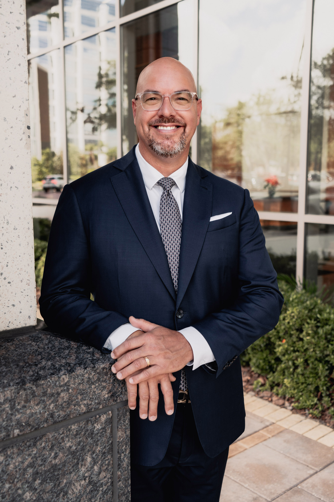

Managing Director & Head of Mid-Market Origination
Benchmark International
MBA · M&A Advisory · C-Suite Operations · Lean Six Sigma
Senior M&A executive with 20+ years of cross-functional leadership spanning investment banking, technology, healthcare, and multi-unit operations. Deep expertise in sell-side advisory, business valuation, deal origination, exit planning, and succession strategy for founder- and family-owned middle-market companies.
“It’s not just financial modeling and spreadsheets. It’s legacy, identity, and the weight of letting go.”

Uniquely positioned to contribute to boards of directors and advisory boards through a rare combination of investment banking transaction expertise, hands-on operating experience, and deep familiarity with the challenges facing privately held and founder-led businesses. Career spans C-suite roles as COO, CIO, and CMO, entrepreneurial ventures from startup to exit, and a current seat at a globally recognized M&A advisory firm advising middle-market owners on the most consequential decisions of their professional lives.
Advises founder-owned businesses ($5M–$250M EV) on sell-side transactions, growth acquisitions, and shareholder value maximization. Expertise in EBITDA normalization, quality of earnings, and financial due diligence.
Deep experience guiding business owners through ownership transitions, retirement exits, and multi-generational succession architecture. Understands the emotional and financial complexities founders face.
Published expertise on PE acquisition tactics and sell-side counter-playbooks. Navigates buyer universe analysis, deal structuring, and competitive process management.
Former CIO/CMO with hands-on experience in digital transformation, SaaS product development, e-commerce, CRM integration, and data-driven marketing across complex organizations.
COO and operations leadership across growth-stage startups, healthcare ventures, and multi-site enterprises. Track record of achieving profitability ahead of projections.
Lean Six Sigma Green Belt. Executive and ownership-table experience in family-owned, PE-backed, and entrepreneurial settings. Fluent in the governance needs of closely held companies.
Open to board of directors, advisory board, and strategic advisory opportunities across multiple industries. Based in Tampa, FL.